Un atelier pensé pour le laser sur CNC
L'Atelier Laser ajoute à FreeCAD 18 modes regroupés par thème : gravure à plat, gravure sur surface 3D courbe, découpe multi-passes, tests & calibration, et assemblage de jobs. Chaque mode génère un fichier G-code prêt pour LinuxCNC, GRBL ou grblHAL (au choix, par profil laser), avec estimation de durée, aperçu du trajet dans la vue 3D et fichier de cadrage à vérifier avant de lancer.
Pour qui ?
Pour qui pilote un module laser monté sur une fraiseuse CNC sous LinuxCNC et veut générer proprement ses parcours depuis FreeCAD, sans écrire de G-code à la main. L'atelier a été développé sur une PrintNC équipée d'un module diode LT-80W-AA-PRO, mais le profil machine se règle entièrement depuis les Préférences.
La philosophie : on mesure, on ne devine pas
Rien n'est supposé sur l'optique du laser. Le comportement du point (foyer, divergence en défocus, noircissement selon la puissance) se règle à partir de mesures réelles sur chute : bandes de calibration, grilles de test, nuancier. Le logiciel s'appuie sur ces mesures plutôt que sur un modèle théorique.
La première icône de la barre d'outils (livre ouvert) ouvre un Guide rapide qui résume le flux de travail et répond à « quel mode pour quoi ? ». Chaque panneau s'ouvre aussi sur un résumé court avec un bouton « En savoir plus » et, pour les concepts clés, un petit schéma explicatif.
Comment l'atelier parle à la machine
Le laser est piloté comme une broche LinuxCNC : la puissance passe par la commande S (PWM), il n'y a pas de sortie analogique dédiée. Le zéro Z est toujours fait sur la surface de la pièce, et la mise au point se fait en descendant le bec à la focale.
Chaîne de commande
- Laser = broche
$1(sélecteur multi-broche LinuxCNC). - Puissance par segment via
S(0 → échelle max de la machine,S1000par défaut). - Armement unique par
M3à puissance nulle + temporisation, désarmementM5. - Compensation d'outil
G43 H<n>en tête de job (offsets X/Y + Z palpé du laser).
Module laser testé — LT-80W-AA-PRO
Module diode (10 W optiques). La pièce carrée qui entoure le nez a été retirée pour pouvoir suivre les surfaces courbes sans collision : le contrôle anti-collision de l'atelier ne modélise donc que le nez conique restant (réglable en Préférences).
Nez : pointe Ø5 mm, sommet du cône Ø16 mm, hauteur 18 mm. Focale ~8 mm.
Sur LinuxCNC, il faut avoir fait T<outil laser> M6 dans la session (T100 par défaut, réglable en Préférences). Le G43 de l'en-tête applique alors les offsets X/Y et le Z palpé de l'outil laser. Ce prérequis est rappelé en commentaire dans chaque fichier généré.
Cloner dans le dossier Mod de FreeCAD
Le dépôt est le workbench : on le clone directement dans le dossier Mod de FreeCAD. Pas de build, pas de dépendance à installer — FreeCAD charge les fichiers Python au démarrage.
git clone https://github.com/atelierduverdier/LaserAtelier.git \
~/.local/share/FreeCAD/<version>/Mod/LaserAtelierAdaptez <version> à votre version de FreeCAD (par ex. v1-1), puis redémarrez FreeCAD : l'atelier « Atelier Laser » apparaît dans le sélecteur d'ateliers. Toute évolution du dépôt est reprise après un simple redémarrage.
Aucun système de build, aucun linter, aucune CI. Les réglages (G-code perso, préréglages matériau, profil du bec, préférences) sont mémorisés entre deux lancements dans un fichier laser_atelier_config.json, dans le dossier de configuration utilisateur de FreeCAD.
Le flux de travail en six étapes
C'est le fil conducteur de tout l'atelier, résumé dans le Guide rapide : on calibre une fois, on teste sur une chute, on prépare le motif, on génère, on vérifie le cadrage, puis on grave.
Calibrer
Une fois : focale (Préférences), puis calibration du point (bande de défocus) et offsets X/Y — mesurés et saisis directement dans les panneaux ★1 et ★2.
Tester
Sur une chute : grille de test ou rampe puissance/vitesse pour trouver les bons réglages du matériau.
Motif
Hachures, texte/forme, image ou projection sur surface courbe selon ce que vous gravez.
G-code
Marquage, gravure remplie ou découpe génèrent le fichier .ngc.
Cadrage
Chaque mode propose un fichier d'aperçu séparé (rectangle englobant, laser éteint) à lancer d'abord.
Graver
Sur LinuxCNC, faire T<laser> M6 puis lancer le fichier.
Un enchaînement qui marche pour tout (pièce plate ou 3D) : 1. créer ou charger le tracé (SVG, ShapeString, sketch) ; 2. le placer en X/Y par rapport au futur zéro pièce (les coordonnées du document = les coordonnées machine) ; 3. le projeter sur la pièce (mode Projection) — contrôle visuel : le tracé est posé sur la surface, on voit exactement où il tombe (dessus, fond de poche, dôme…) ; 4. graver : Marquage pour des traits (sélectionner les objets projetés), Gravure remplie pour du noir plein (sélectionner la forme fermée source, pas le projeté).
Deux règles à retenir : la hauteur Z du tracé dans le document est visuelle — le G-code suppose toujours zéro Z machine sur la surface gravée (zéro papier) ; et un job = une seule surface de référence (dessus ou fond de poche — pour graver aux deux hauteurs, deux jobs avec re-zéro entre les deux). Sur une vraie surface 3D, sélectionner tracé + objet de référence dans Marquage active le suivi de relief.
Estimation de durée tenant compte des accélérations, aperçu du trajet dans la vue 3D, aperçu de cadrage en fichier séparé, préréglages matériau, et mémorisation des derniers réglages de chaque panneau (rouvrir un mode retrouve les valeurs de la dernière fois). Mieux : les réglages sont attachés à la forme — écrits à la génération dans une propriété de l'objet sélectionné, sauvegardée avec le document (.FCStd). Rouvrir le même mode avec cette forme sélectionnée re-propose ses réglages : chaque forme garde sa recette de gravure. Et chaque génération crée un objet Job dans l'arborescence (« Job Marquage - Logo »…) : double-clic = re-sélection des sources et réouverture du panneau pré-rempli, prêt à modifier et régénérer. La granularité descend jusqu'à la sous-sélection : deux faces d'un même sketch/SVG = deux recettes et deux Jobs distincts. Le tout est rangé dans un dossier « Atelier Laser » de l'arbre, et le bouton « Jobs sélectionnés → job combiné » empile plusieurs Jobs (chacun avec sa recette) en un fichier unique, sans rouvrir les panneaux.
18 modes, regroupés par thème
Ils apparaissent dans cet ordre dans la barre d'outils et le menu « Atelier Laser ». Voici chaque panneau, avec sa capture et le cas d'usage.
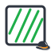
Gravure à plat
Sur une pièce plane : remplissage, texte/forme en noir, ou photo.
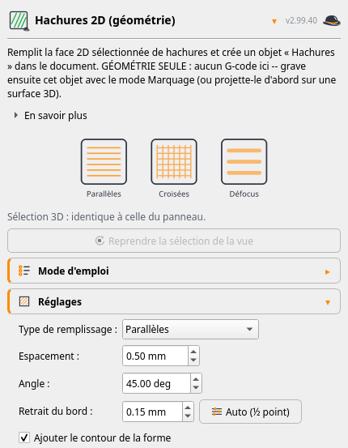
Hachures 2D (géométrie)
Remplit une face 2D de hachures parallèles, croisées ou en défocus — crée la géométrie des hachures, à graver ensuite avec le Marquage.
Mode d'emploi
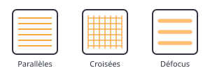
- Sélectionner la face 2D (ou esquisse fermée) à remplir.
- Choisir le type : parallèles, croisées ou défocus.
- Régler espacement, angle et retrait du bord (« Auto (½ point) ») pour que la brûlure ne déborde pas.
- OK crée l'objet
Hachures— c'est de la géométrie, pas de G-code. - Enchaîner : Marquage pour graver, ou Projection sur une surface 3D.

Texte (trait simple)
Grave du texte en police mono-trait : chaque lettre est dessinée d'un seul trait par branche (comme un traceur à plume), pas en contour rempli. Idéal au gros point / défocus. Police Hershey Sans 1-stroke (domaine public) — majuscules, minuscules, chiffres et accents.
Mode d'emploi
- Taper le texte (plusieurs lignes possibles), régler la hauteur (des capitales) et les espacements.
- OK crée un objet fil
TexteTraitSimpledans l'arbre (coin bas-gauche à l'origine). - Le sélectionner et ouvrir Marquage pour le graver — tous les styles, préréglages, suivi de surface courbe et job combiné.

Gravure remplie (noir)
Grave un texte ou une forme 2D en noir plein : remplissage en défocus rentré du bord + contour repassé net au foyer. Styles de trait, remplissage en dégradé (la puissance varie le long d'une direction réglable), préréglages matériau, compensation puissance/défocus. Un aperçu photo (rendu réaliste) montre le résultat brûlé — teintes selon puissance/vitesse, superpositions plus foncées — avant de lancer.
Mode d'emploi
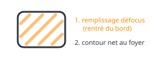
- Sélectionner la forme 2D fermée (face, esquisse, texte).
- Poser le zéro : X/Y au coin de référence, Z sur la surface (le champ « Décalage de surface » sert à un fond de poche).
- Choisir un ton du Nuancier ou un préréglage matériau ; sinon régler puissance/vitesse et cocher « Puissance vs défocus ».
- Régler le remplissage : espacement (resserré automatiquement à la largeur brûlée mesurée), angle, style, dégradé éventuel.
- Activer le contour (repassé net au foyer, le remplissage se glisse dessous : pas de liseré).
- Vérifier avec l'Aperçu photo, puis « Générer et sauvegarder le G-code… ». Relire le
G0 Z…en tête du fichier avant de lancer.
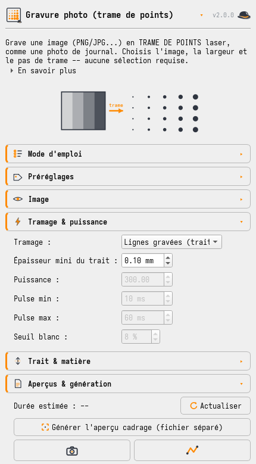
Gravure photo (trame de points)
Convertit une image en gravure laser, 5 tramages : points (diffusion Floyd-Steinberg, durée variable), lignes calibrées (photo calibrée : puissance modulée par pixel via le nuancier mesuré), diffusion en lignes (points fins rapides) et gros points Z (taille de point = noirceur, artistique). Tonalité (gamma) avec aperçu en direct, et mire des tramages pour comparer les styles sur chute. Bouton photo de démonstration (Maupassant par Nadar, 1888, domaine public) et préréglages ★ (portrait qualité, essai rapide, équilibré, artistique) pour démarrer sans tâtonner.
Mode d'emploi
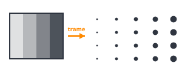
- Charger l'image (« Parcourir… » ou la photo de démonstration). Aucune sélection dans la vue 3D.
- Régler la largeur, le pas de trame (finesse ET durée), l'angle et le gamma.
- Choisir le tramage (Floyd-Steinberg recommandé) et la puissance ; « Mire des tramages » les compare sur chute.
- Zéro machine : X/Y au coin bas-gauche (l'image y est posée), Z sur la surface.
- Vérifier (« Aperçu des points », « Aperçu cadrage ») puis générer — compter ~2-4 points/seconde.
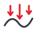
Sur surface 3D
Suivre le relief d'une pièce bombée, sans écraser le foyer.

Projection sur surface 3D
Projette un motif 2D sur une surface courbe (sonde par tessellation, quasi instantanée). Le panneau s'ouvre d'abord, puis on sélectionne motif et surface dans la vue — l'état reconnu s'affiche en direct.
Mode d'emploi
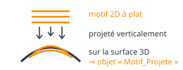
- Préparer le motif 2D à plat et la surface 3D cible.
- Dans la vue, sélectionner le(s) motif(s) et la surface ensemble ; l'état passe au vert quand c'est valide.
- OK : crée l'objet projeté
Hachures_3D. - Enchaîner avec Marquage ou Découpe courbe (objet projeté + modèle 3D) pour suivre le relief.
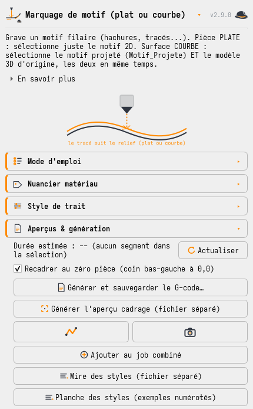
Marquage de motif (plat ou courbe)
Grave un motif filaire, à plat ou en suivant le relief d'un modèle 3D, avec 6 styles de trait (plein, tirets, pointillé, vague défocus, défocus point élargi, dégradé Z), le nuancier matériau, le ton sur mesure interpolé (largeur + noirceur → vitesse calculée) et la mire des styles (les 6 styles gravés en bandes étiquetées sur chute). Option axe médian (squelette) : au lieu du contour d'une forme fermée (ex. un « T »), grave son axe central avec un point élargi dimensionné à la largeur du trait — le glyphe en quelques passes au lieu de contour + remplissage. Deux planches de référence à graver sur chute : la mire des styles (le même trait dans les 6 styles) et la planche des styles (exemples) — un mot exemple gravé dans chaque style, numéroté et légendé au foyer, pour voir le rendu réel sur de vraies lettres. Un aperçu photo (rendu réaliste) montre le tracé brûlé avant de lancer.
Mode d'emploi
- Sélectionner le motif : à plat, le motif 2D ; sur courbe, l'objet projeté et le modèle 3D.
- Zéro machine : X/Y au coin, Z sur le point haut de la surface.
- Matériau/ton : préréglage, ton du Nuancier (« Calculer le réglage (interpolé) »), ou puissance/vitesse à la main.
- Choisir le style de trait (plein, tirets, pointillé, vague défocus, point élargi).
- Vérifier (« Aperçu photo », « Mire des styles ») puis « Générer et sauvegarder le G-code… ».
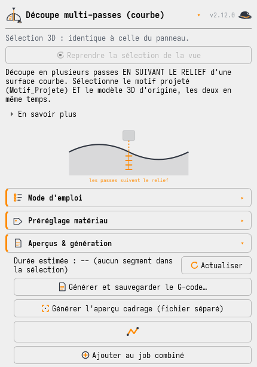

Découpe multi-passes (courbe)
Combine le suivi de relief du marquage courbe avec la logique multi-passes / kerf / imbrication de la découpe à plat.
Mode d'emploi
- Sélectionner l'objet projeté et le modèle 3D d'origine, ensemble.
- Zéro machine : X/Y au coin, Z sur le point haut ; le relief est sondé à chaque point.
- Matériau : préréglage, ou épaisseur / passes / puissance / vitesse. Chaque passe recule le foyer dans la matière.
- Kerf, trous-avant-contour et optimisation par proximité, comme à plat.
- Vérifier (« Aperçu cadrage », « Aperçu du trajet ») puis générer.
Découpe
Traverser le matériau en plusieurs passes.
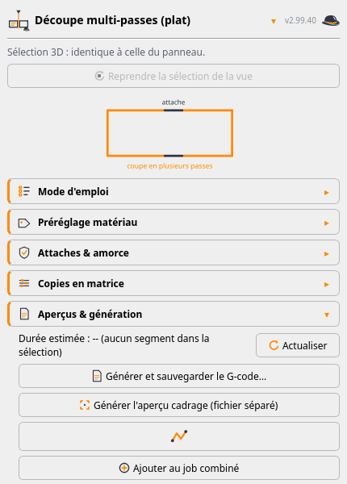
Découpe multi-passes (matériau plat)
Passes progressives, compensation de kerf, ordre trous-avant-contour, attaches (ponts de matière), amorce (lead-in hors du bord fini) et copies en matrice pour découper une série en un seul job.
Mode d'emploi
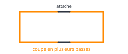
- Sélectionner le(s) profil(s) fermé(s) à découper.
- Zéro machine : X/Y au coin, Z sur le dessus de la pièce (le foyer descend passe après passe).
- Matériau : préréglage, ou épaisseur / passes / puissance / vitesse ; le kerf compense la largeur du trait.
- Ajouter attaches (ponts) et amorce ; copies en matrice pour une série.
- Vérifier (« Aperçu cadrage », « Aperçu du trajet »), générer, relire le
G0 Z…et la hauteur de bec.
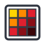
Tests & calibration
Trouver les bons réglages et caler l'optique — tous avec préréglages d'usine (★).
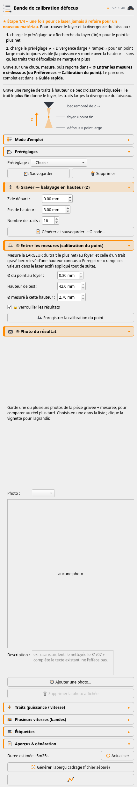

Bande de calibration défocus
Rangée de courts traits à hauteurs de bec croissantes, étiquetés en hauteur et en puissance — pour mesurer le foyer et la divergence. Option multi-bandes : plusieurs bandes côte à côte, une par vitesse, tous les niveaux de gris en un seul job.
Mode d'emploi
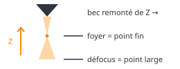
- Zéro Z sur la surface. Aucune sélection.
- Régler le balayage en hauteur (Z) et la puissance/vitesse ; option multi-bandes (une par vitesse).
- Graver, puis mesurer : le trait le plus fin → Z de foyer + point au foyer ; un trait large → défocus de test + point au défocus.
- Saisir les trois mesures dans la section « ② Entrer les mesures (calibration du point) » du panneau.
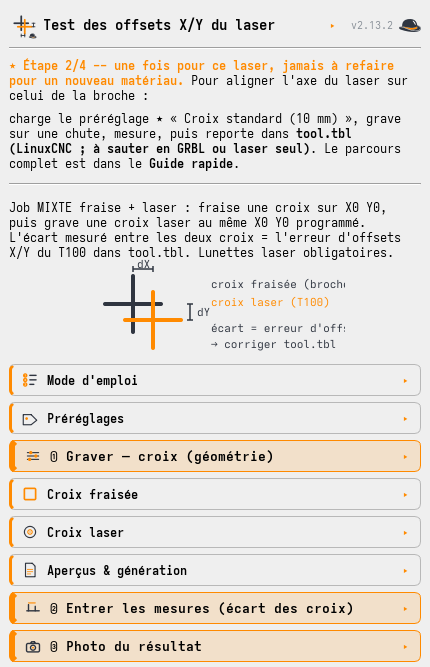

Test des offsets X/Y du laser
Job mixte fraise + laser : fraise une croix sur X0 Y0, puis grave une croix laser au même point programmé. L'écart mesuré entre les deux croix corrige les offsets X/Y dans tool.tbl.
Mode d'emploi
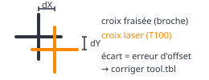
- Lunettes laser. Chute sur le martyre, fraise à graver montée, zéro X/Y au centre de la chute.
- Régler la taille de la croix, la fraise (profondeur/vitesse) et le laser (puissance/vitesse).
- Lancer ; monter la glissière laser pendant la pause du 2ᵉ changement d'outil.
- Saisir l'écart dX/dY en section « ② Entrer les mesures » : la correction à reporter dans
tool.tbl(X ← X − dX, idem Y) est calculée.
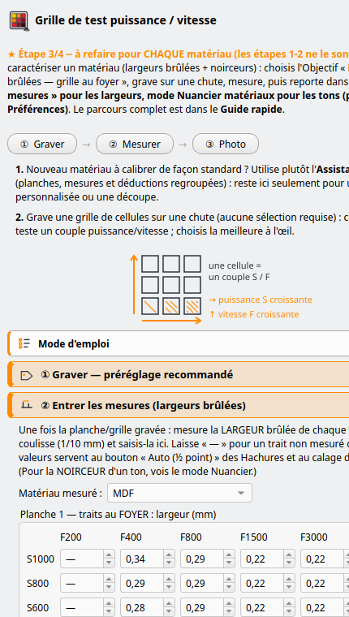
Grille de test puissance/vitesse
Matrice de cellules à puissance/vitesse variables, étiquetées, avec cadre net autour de chaque cellule. Un préréglage recommandé (« objectif ») remplit la grille prête à graver ; les largeurs brûlées se saisissent inline (section ②). Champ Hauteur (Z) de test pour rejouer la matrice à une autre hauteur, et style de trait du remplissage (plein / tirets / pointillé).
Mode d'emploi
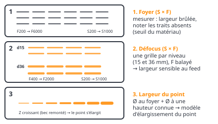
- Aucune sélection. Pour un nouveau matériau, préférer la Planche de calibration (tout en un job).
- Choisir gravure/découpe, les plages de puissance (colonnes) et vitesse (lignes), le nombre de cellules.
- Régler taille des cellules, plein/contour, étiquettes S/F.
- Hauteur (Z) de test : rejouer la grille à une autre hauteur (bec défocalisé).
- Graver sur chute, choisir la meilleure cellule ; saisir les largeurs brûlées en section « ② Entrer les mesures » et les tons au Nuancier.
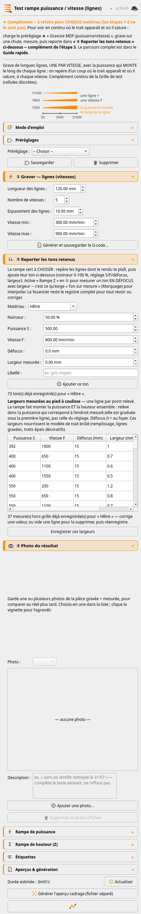

Rampe puissance/vitesse (lignes)
Longues lignes, une par vitesse, chacune à puissance croissante de gauche à droite (rampe Z optionnelle). Règle graduée en chiffres verticaux pour lire la puissance sous n'importe quel point.
Mode d'emploi
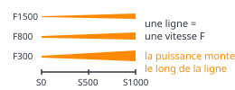
- Zéro Z sur la surface. Aucune sélection.
- Régler la longueur des lignes et la liste des vitesses (une ligne par vitesse).
- Régler la rampe de puissance (min→max) et le nombre de paliers ; rampe Z optionnelle.
- Graver : lire sous la règle graduée où le trait apparaît et où il sature, à chaque vitesse.
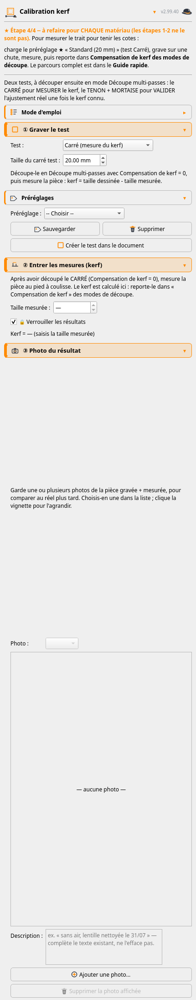

Calibration kerf
Deux géométries : un carré pour mesurer le kerf (taille dessinée − taille mesurée), et un tenon + mortaise à jeux gradués pour valider l'ajustement réel une fois le kerf connu.
Mode d'emploi
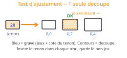
- Choisir le test : carré (mesure) ou tenon + mortaise (validation).
- OK crée la géométrie ; la découper en Découpe multi-passes avec compensation de kerf = 0.
- Saisir la taille mesurée en section « ② Entrer les mesures » : le kerf = dessiné − mesuré est calculé, à reporter en « Compensation de kerf ».
- Valider avec le tenon + mortaise : retenir le jeu (gravé sous chacune) qui donne l'ajustement voulu.
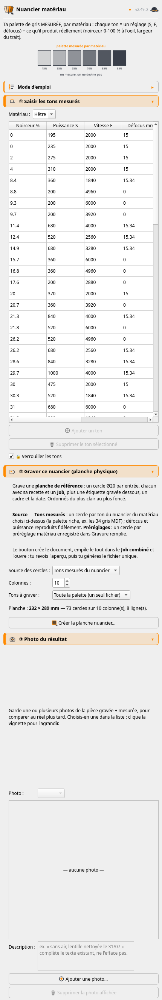

Nuancier matériau
La palette de gris mesurée d'un matériau : chaque ton = un réglage (puissance, vitesse, défocus) + son résultat constaté (noirceur 0-100 %, largeur). Les modes Marquage et Gravure remplie proposent « Appliquer ce ton ».
Mode d'emploi
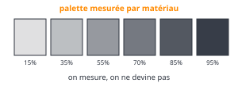
- Graver d'abord une grille/rampe/planche ; garder les tons qui plaisent.
- Choisir un matériau, ou taper un nouveau nom.
- Pour chaque ton : « + Ajouter » et saisir le réglage (S, F, défocus) + le résultat (noirceur 0-100 %, largeur).
- OK enregistre : le tableau nourrit dégradés, photos calibrées et « ton sur mesure ».

Catalogue (planche de référence)
Grave en un seul job une planche de référence : les 6 styles de trait du Marquage (sur un mot exemple) + un exemple de Gravure remplie, chaque bloc titré. À garder une fois les réglages calés — on voit le rendu réel de chaque style (plein, tirets, pointillé, vague, point élargi, dégradé) sur son matériau. Aperçu photo (rendu réaliste, chaque style bien distinct) avant de graver. La gravure photo se teste dans son propre mode (Gravure photo).
Assemblage & réglages
Empiler des opérations et centraliser la configuration.
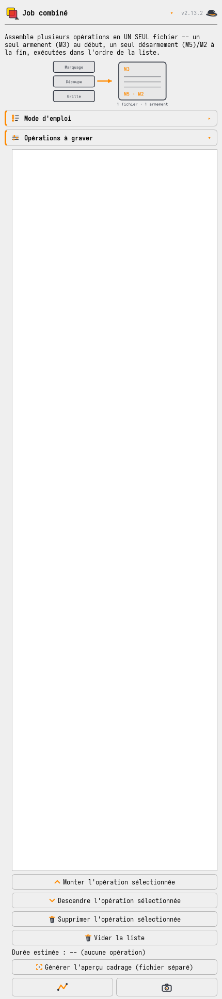
Job combiné
Assemble plusieurs opérations en un seul fichier (un armement, transitions anti-collision). Chaque opération s'ajoute depuis son vrai mode (bouton « ➕ Ajouter au job combiné ») avec toutes ses options — plus de fenêtres simplifiées. Un aperçu photo peint tout le job d'un coup (gravures + découpes) avant lancement.
Mode d'emploi
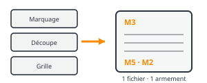
- Dans chaque mode combinable, régler l'opération puis « ➕ Ajouter au job combiné ».
- Revenir ici : ordonner la liste (monter / descendre / supprimer).
- Vérifier (« Aperçu cadrage », « Aperçu du trajet », « Aperçu photo » de tout le job).
- OK : un seul fichier, un seul armement (
M3) / désarmement (M5,M2).
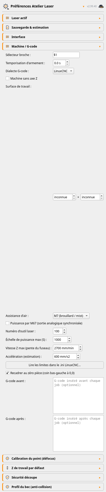

Préférences
Tous les réglages machine centralisés, avec des profils laser (un par module : outil, calibration du point, Z, bec, échelle S, et son propre nuancier / largeurs brûlées / préréglages matériau — prêt pour un 2ᵉ laser IR) : appliqués immédiatement, sans redémarrer. Export / import de toute la config + les photos de résultat en un .zip, à ranger en lieu sûr.
Caler l'optique et le matériau, une fois
Le cœur de l'atelier : deux mesures du point calibrent le modèle de défocus, la fluence relie puissance et largeur de trait, le test d'offsets aligne le laser, et le nuancier capitalise les gris qui marchent.
Vous venez d'installer l'atelier et rien n'est réglé ? Faites ces gravures dans l'ordre — les étapes ★1 et ★2 une seule fois pour la machine, l'étape ★3 pour chaque nouveau matériau. Chaque panneau de calibration rappelle son numéro d'étape en tête et suit le même fil : ① graver, ② entrer les mesures (juste en dessous, plus besoin d'aller les chercher ailleurs) et garder une ③ photo du résultat.
- ★1 — Bande de calibration défocus. Pour trouver le foyer et la divergence : charge le préréglage ★ « Recherche du foyer (fin) », grave, mesure → saisis dans la section ② Entrer les mesures (calibration du point) du panneau.
- ★2 — Test des offsets X/Y. Pour aligner l'axe du laser : charge le préréglage ★ « Croix standard (10 mm) », grave, saisis l'écart en section ② : la correction à reporter dans
tool.tblest calculée (LinuxCNC ; à sauter en GRBL ou laser seul). - ★3 — Grille de test. Pour caractériser un matériau : un préréglage recommandé (objectif) remplit la grille prête à graver ; après gravure, saisis les largeurs en section ② et les gris au Nuancier.
- ★4 — Calibration kerf. Pour tenir les cotes : charge le préréglage ★ « Standard (20 mm) » (test Carré), mesure en section ② → le kerf calculé se reporte en Compensation de kerf.
Complément : la Rampe puissance/vitesse (préréglage ★ « Gravure MDF (puissance/vitesse) ») donne la version continue de l'étape 3.
La hiérarchie des tests — dans l'ordre
Chaque test alimente le suivant. Les étapes machine se font une seule fois par laser ; pour un nouveau matériau, une seule planche suffit :
- Une fois par laser — la Bande de calibration défocus (deux mesures du point, saisies dans le panneau) puis le Test offsets fraise + laser (X/Y du laser dans
tool.tbl). Sans le point calibré, les sections défocus de la planche seraient fausses. - Nouveau matériau — bouton « Planche de calibration matériau » (panneau Grille de test) : UN SEUL G-code, gravé sur une chute ~130 × 125 mm (zéro machine au coin bas-gauche, sur le dessus). Trois sections numérotées, de bas en haut :
- 1 — traits au foyer. Grille 5 puissances × 5 vitesses (F400 → F6000, jusqu'au maxi machine). Mesurer la largeur brûlée de chaque trait, et noter ceux qui restent vierges : un trait vierge est une donnée — c'est le seuil du matériau.
- 2 — traits au défocus. 5 puissances à F800, à trois niveaux de défocus (~15 / 36 / 50 mm, une colonne par niveau). Mesurer la largeur brûlée de chaque trait.
- 3 — bandes nuancier. Rectangles remplis au défocus (2 puissances × 5 vitesses). Estimer la noirceur (0–100 %) et mesurer la largeur, puis saisir chaque bande dans le mode Nuancier.
Toutes ces mesures restent dans la config locale — rien de spécifique à votre machine ne part avec l'atelier. - Après le nuancier (facultatif, pour choisir à l'œil) — la Mire des styles (Marquage) et la Mire des tramages (Gravure photo).
Le point & le modèle de défocus
Pour noircir une surface en un seul passage, le remplissage éloigne le bec du foyer : le point s'élargit et des hachures espacées se recouvrent. Le modèle est un cône de divergence linéaire calibré à partir de deux mesures réelles — le point au foyer, puis le point à un défocus connu — jamais deviné. La Bande de calibration défocus fournit ces mesures ; on les saisit une seule fois dans la section « ② Entrer les mesures » de son panneau (« point au foyer », « défocus de test », « point au défocus de test ») et tous les modes concernés les réutilisent. Le remplissage est automatiquement rentré du rayon de point pour rester à l'intérieur du contour.
Puissance vs défocus (la fluence)
Défocaliser étale la même puissance sur un point plus large : l'énergie déposée par unité de surface — la fluence — baisse, et sous un seuil le trait ne marque plus. Pour un trait balayé à la vitesse v, avec un point de diamètre d et une puissance P, la fluence vaut :
Les modes Gravure remplie et Marquage (style Défocus) exposent une section « Puissance vs défocus » : on renseigne un réglage de référence connu bon sur le matériau (puissance, vitesse, largeur de point d'une gravure réussie), et l'atelier soit indique la fluence obtenue par rapport à cette référence, soit compense la puissance automatiquement pour retrouver la même fluence à la largeur et la vitesse courantes. Dans le Marquage, on saisit directement la largeur de point voulue (l'atelier en déduit la hauteur de défocus), plus intuitif qu'une remontée de bec.
Offsets X/Y — aligner le laser sur la broche
Le laser n'est pas monté exactement sur l'axe de la broche : il faut mesurer son décalage. Le Test des offsets fraise une croix, puis grave une croix laser au même point programmé. L'écart signé entre les deux (au pied à coulisse) est l'erreur d'offset :
| Mesure | Correction dans tool.tbl (outil laser) |
|---|---|
| dX = X croix laser − X croix fraisée | X_nouveau = X_actuel − dX |
| dY = Y croix laser − Y croix fraisée | Y_nouveau = Y_actuel − dY |
tool.tbl.Si un signe d'offset est faux, la croix laser peut partir loin. Faites le test sur une chute large, lunettes laser obligatoires. C'est le seul mode qui fait ses propres changements d'outil (T<fraise> M6 puis T<laser> M6).
Le nuancier — capitaliser les gris
La noirceur n'étant pas linéaire avec la puissance, l'atelier ne se fie pas à un modèle mais à des mesures. Après une grille ou une rampe de test, on note dans le Nuancier chaque ton utile : le réglage (puissance, vitesse, défocus) et son résultat constaté (noirceur à l'œil en %, largeur de trait). Les modes Marquage et Gravure remplie proposent alors « Appliquer ce ton » — puissance, vitesse et style Défocus réglés d'un clic sur un rendu déjà validé (le logiciel choisit le ton mesuré le plus proche). C'est la fondation des futurs dégradés et photos calibrés.
Tous les réglages machine, au même endroit
La commande Préférences (icône engrenage) centralise la configuration. Tout est enregistré dans laser_atelier_config.json et appliqué immédiatement. Une valeur invalide est ignorée avec un avertissement, et la valeur par défaut conservée.
| Réglage | Défaut | Rôle |
|---|---|---|
| Dossier G-code | — | Dossier proposé par défaut à la sauvegarde (repli sur /tmp s'il n'est pas accessible). |
| Vitesse rapide (estimation) | 6000 | Vitesse G0 supposée pour l'estimation de durée. N'affecte que l'estimation. |
| Marge de survol (transits) | 10,0 | Marge ajoutée au Z de travail pour les déplacements à vide. 0 = transits au Z de travail. |
| Puissance de cadrage (S) | 0 | Puissance du faisceau pendant l'aperçu cadrage. 0 = laser éteint ; sinon très faible. |
| Point au foyer | 0,15 | Calibration du point : diamètre au foyer (mesuré à la bande de défocus). |
| Défocus de test | 3,0 | Calibration du point : hauteur de la 2ᵉ mesure au-dessus du foyer. |
| Point au défocus de test | 1,0 | Calibration du point : diamètre mesuré à ce défocus. |
| Z de travail (foyer) | 8,5 | Z de travail proposé par défaut dans tous les panneaux. Chaque panneau reste modifiable. |
| Marge de survol (marquage) | 0,5 | Marge de transit proposée dans les modes de marquage (0 recommandé sur pièce plate). |
| Sélecteur broche | $1 | Sélecteur multi-broche ajouté aux commandes S/M3/M5 (LinuxCNC : laser = spindle 1). |
| Numéro d'outil laser | 100 | Numéro (tool.tbl) de l'outil laser : compensation G43 H<n> et Test des offsets. |
| Échelle de puissance max (S) | 1000 | Valeur S = pleine puissance. Fixe le maximum des champs de puissance et le plafond de la fluence. |
| Temporisation d'armement | 2,0 | Pause G4 après l'armement, le temps que l'électronique du module soit prête. |
| Hauteur bec minimale | 1,5 | Butée de sécurité anti-collision : le bec ne descend jamais plus près de la surface. |
| Bec : diamètres et hauteur | 5 / 16 / 18 | Profil du bec pour le contrôle anti-collision sur surface courbe. |
Extrait des réglages les plus utiles — la liste complète (vitesses de cadrage, accélération d'estimation, seuils d'avertissement d'épaisseur/pas Z…) figure dans le README du dépôt.
Ce que génère l'atelier
Chaque générateur renvoie un G-code assaini pour LinuxCNC (dialecte RS274). Le format est pensé pour un laser piloté en broche PWM.
Structure d'un job
- En-tête :
G21/G90/G94/G43 H<laser>, puisM5 $1. - Armement unique :
M3 $1à puissance nulle + temporisation. - Puissance par segment via
S…,S0sur les rapides. - Désarmement
M5 $1, arrêt propre auM2.
Assainissement obligatoire
LinuxCNC rejette les parenthèses imbriquées dans les commentaires et les octets non-ASCII (accents français). Le générateur remplace les parenthèses internes et translittère les accents à chaque sortie — l'opération est idempotente (sûre pour les jobs combinés).
Le numéro d'outil laser (défaut 100) et l'échelle de puissance S (défaut 1000) sont dans les Préférences : une machine dont le laser est un autre outil de la table, ou dont la broche est configurée S0-255, s'adapte entièrement depuis l'interface, sans toucher au code. Le sélecteur de broche $1 est lui aussi réglable.
Choisir le dialecte GRBL dans les Préférences (réglé par profil laser — créez un profil par machine) : le G-code émis est du GRBL 1.1 pur — pas de sélecteur de broche ni de T/M6/G43, pas de G64 (le lissage de trajectoire est natif chez GRBL, réglé par la junction deviation $11), armement en M4 (mode laser). Côté machine : $32=1 et $30 égal à l'échelle de puissance S des Préférences. Le zéro Z se pose sur la surface par le moyen de son choix (cale, réglet à la hauteur de focale…) — aucun palpeur requis. Seul le Test des offsets X/Y (job mixte fraise+laser) reste propre à LinuxCNC. Variante grblHAL : comme GRBL, mais avec le changement d'outil et la compensation T/M6 + G43 H (firmware compilé avec la table d'outils, option N_TOOLS). Ces deux dialectes ne sont pas encore testés sur machine réelle (la machine de développement tourne sous LinuxCNC) — retours bienvenus via les issues GitHub.
La config LinuxCNC du laser
L'atelier génère le G-code ; voici comment la PrintNC l'exécute. La config machine (HAL / INI / table d'outils) est publiée à part, dans le dépôt printnc-config — carte Flexi-HAL + Remora, laser LaserTree LT-80W-AA-PRO piloté en PWM direct.
Le laser = broche $1
- Armer / éteindre :
M3 $1 S0/M5 $1. Puissance :S0…1000. - Sortie PWM directe (
flexi.SP.SPINDLE_PWM) :duty% = S / 10, rien à calibrer. - Interlock AUX3 :
spindle.1.onpilote un relais 24 V. SeulM5 $1ouvre le relais — la vraie coupure (une pause programme ne coupe pas le faisceau). - Outil
T100: offsets X +2 / Y −90 (tool.tbl, appliqués parG43 H100), foyer 8,5 mm sous le nez.
Aide-mémoire
- Palper le laser :
T100 M6puisG43 H100. - Tir de visée faible :
M3 $1 S20. - Puissance 50 % :
S500 $1. - Extinction réelle :
M5 $1.
Le PWM sort à puissance fixe (M3). Quand la machine ralentit (accélérations de début de trait, coins), elle brûlerait plus longtemps au même endroit à S constant → début de trait plus épais. Le HAL multiplie donc la consigne par le rapport vitesse réelle / vitesse demandée avant conversion, pour une énergie déposée constante par mm :
duty(%) = ( S × vitesse_réelle / vitesse_demandée ) / 10
Conséquence directe sur l'atelier : à l'arrêt la vitesse est nulle → la puissance tombe à 0. Un G4 (temporisation faisceau allumé) ne graverait donc rien. C'est pourquoi le générateur produit tous les points comme des micro-segments (un court G1 dont l'avance reproduit le temps d'exposition), jamais des dwells à l'arrêt.
# remora-flexi.hal — section LASER (extrait)
loadrt limit1 names=laser_reqvel_floor,laser_ratio_clamp
loadrt div2 names=laser_velratio
loadrt mult2 names=laser_dyn
loadrt scale names=laser_scale
setp laser_scale.gain 0.1 # S/10 = rapport cyclique %
setp laser_reqvel_floor.min 0.1 # evite la division par zero a l'arret
net laser-reqvel motion.requested-vel => laser_reqvel_floor.in
net laser-curvel motion.current-vel => laser_velratio.in0
net laser-reqvel-f laser_reqvel_floor.out => laser_velratio.in1
net laser-ratio laser_velratio.out => laser_ratio_clamp.in
net laser-ratio-c laser_ratio_clamp.out => laser_dyn.in1
net laser-spd spindle.1.speed-out => laser_dyn.in0
net laser-dyn laser_dyn.out => laser_scale.in
net laser-pwm laser_scale.out => flexi.SP.SPINDLE_PWM
net laser-arm spindle.1.on => flexi.output.AUX3 # interlock relais 24VUn job 100 % laser pilote spindle.1, mais le planificateur attend spindle.0.at-speed — que le VFD (broche de fraisage) rapporte FALSE à l'arrêt. Sans correctif : laser allumé, machine en position, plus aucun mouvement. Le HAL calcule un at-speed effectif = VFD à vitesse OU broche 0 arrêtée. Procédure complète (palpage, modes Martyre / Pièce, pièges) : WORKFLOW_LASER.md.
Suivi de surface : de la minute à la milliseconde
La sonde de hauteur Z (pour le marquage/découpe courbe et la projection) reposait au départ sur une intersection géométrique OpenCascade par point (~5 ms chacune) — des minutes sur un remplissage dense. Elle utilise maintenant une tessellation unique de la surface suivie d'une interpolation barycentrique par point (quelques microsecondes).
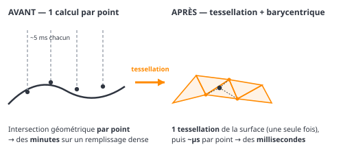
| Calcul (plaque ondulée 100×60 mm, ~48 000 points) | Avant | Après | Gain |
|---|---|---|---|
| Projection du motif sur la surface 3D | 66,2 s | 0,06 s | ×1200 |
| G-code marquage courbe (1ᵉʳ calcul) | 107,0 s | 0,18 s | ×600 |
| Hachures 0,2 mm sur 24 faces à trou | 2,6 s | 0,08 s | ×33 |
Précision préservée : l'écart Z entre le maillage et la vraie surface est borné à 0,05 mm (erreur max mesurée 0,046 mm sur 300 points) — négligeable face à la tolérance de focus du laser (~0,1 mm).
Questions fréquentes
Les points qui reviennent le plus souvent à l'usage.
En photo, si je mets un pas de trame de 1 mm avec un point de 2 mm, ça se chevauche ?›
Oui, beaucoup. Le pas de trame est la distance entre les centres des points ; avec un point de 2 mm (rayon 1 mm) et un pas de 1 mm, le bord de chaque point atteint le centre du voisin — les points fusionnent en X, en Y et en diagonale. Le rendu s'écrase en noir plein et le dégradé disparaît.
La règle (rappelée dans l'infobulle du champ « largeur du point ») : la largeur de point doit être proche du pas de trame. Pour un pas de 1 mm, visez un point d'environ 0,8 à 1 mm ; pour un point de 2 mm, un pas d'environ 2 mm. Attention : l'aperçu à l'écran affiche un pixel par point et ne montre pas le chevauchement — faites toujours un essai sur chute.
Mes traits sont en pointillé à haute vitesse, c'est un bug ?›
Non. Le laser est piloté en S/PWM : à chaque changement de puissance, la machine marque une micro-pause aux frontières de paliers, ce qui hache le trait à grande vitesse. Les rampes utilisent le lissage de trajectoire G64 et une commande S insérée sur les lignes G1 pour rester fluides. Réduire le nombre de paliers aide aussi.
Ma photo est verticale mais elle apparaît à l'horizontale dans le tramage ?›
L'orientation EXIF des photos de téléphone est appliquée automatiquement au chargement. Si l'orientation ne convient toujours pas, le champ Rotation du panneau (0°/90°/180°/270°, sens horaire) permet d'orienter la gravure sur la pièce.
Pourquoi mon G-code exige T<laser> M6 avant de tourner ?›
Le laser n'est pas sur l'axe de la broche. Le G43 de l'en-tête applique les offsets X/Y et le Z palpé de l'outil laser — mais seulement si celui-ci est l'outil courant. Sans T<laser> M6 préalable, les coordonnées seraient interprétées en position broche (foyer faux, X/Y décalés). Le numéro d'outil laser se règle dans les Préférences.
Je n'ai pas la même machine ni le même laser. Ça marche ?›
Oui, pour l'essentiel via les Préférences : dialecte de G-code (LinuxCNC / GRBL / grblHAL, par profil laser), profil du bec (anti-collision), Z de travail, calibration du point, numéro d'outil laser, échelle de puissance S, sélecteur de broche. Deux points restent dans le code : le tableau FOCUS_TABLE (hauteur de bec par épaisseur pour la découpe à plat, propre au LT-80W-AA-PRO) et le mode Test des offsets (job mixte fraise + laser, propre à LinuxCNC).
GRBL est-il supporté ?›
Oui. Un réglage dialecte de G-code (dans les Préférences, par profil laser) permet de choisir LinuxCNC (défaut), GRBL ou grblHAL. En GRBL, le G-code émis est du GRBL 1.1 pur : pas de sélecteur de broche ni de T/M6/G43, pas de G64 (lissage natif par la junction deviation $11), armement en M4 (mode laser). grblHAL ajoute le changement d'outil et la compensation T/M6 + G43 H. Ces deux dialectes ne sont pas encore testés sur machine réelle (la machine de développement tourne sous LinuxCNC) — retours bienvenus via les issues GitHub. Voir la carte « Contrôleur GRBL » plus haut pour le détail.